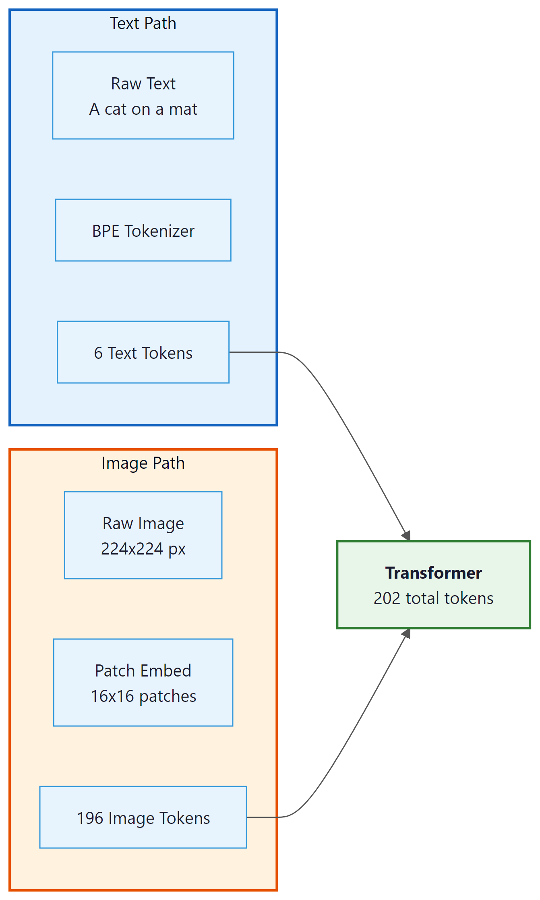
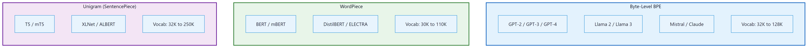

My chat template puts the system prompt in just the right place. My therapist says I have the same issue with boundaries.
Token, Boundary-Confused AI Agent
Prerequisites
This section assumes you understand BPE and other subword algorithms from Section 2.2 and the tokenization fundamentals from Section 2.1. Familiarity with how LLMs are accessed through APIs (Section 11.1) is helpful for the cost estimation discussion, though you can read it independently.
You now understand how tokenizers are trained, but knowing the algorithm is only half the story. When you actually deploy an LLM, you will encounter a different set of questions: What are those mysterious <|system|> tokens? Why does my Japanese prompt cost four times as much as the English version? How do I format a multi-turn conversation correctly? This section covers five practical topics that connect tokenization theory to real-world usage:
special tokens, chat templates, multilingual fertility, multimodal tokenization, and API cost estimation.
Tokenizer fertility is a fairness issue. Users of languages that tokenize inefficiently pay more per API call, get less context per request, and experience slower inference. Building on the BPE and Unigram algorithms from Section 2.2, fertility differences arise directly from how training corpora shape the merge rules. The research community is increasingly recognizing this, and newer models allocate more vocabulary space to non-English languages. Llama 3's expanded vocabulary (128K tokens) and GPT-4o's rebalanced training data represent steps toward more equitable tokenization.
Special Tokens

Beyond the subword vocabulary, every tokenizer includes a set of special tokens that serve structural purposes. These tokens are never produced by the subword algorithm itself; they are manually added to the vocabulary and carry specific meanings that the model learns during training. Understanding special tokens is essential for correctly formatting inputs and interpreting outputs.
Common Special Tokens
| Token | Typical Symbol | Purpose |
|---|---|---|
| Beginning of Sequence | <s>, [CLS], <|begin_of_text|> |
Marks the start of input; signals the model to begin processing |
| End of Sequence | </s>, [SEP], <|end_of_text|> |
Marks the end of input or a boundary between segments |
| Padding | [PAD], <pad> |
Fills sequences to uniform length in batches; attention masks ignore these |
| Unknown | [UNK], <unk> |
Placeholder for tokens not in vocabulary (rare with subword tokenizers) |
| Mask | [MASK] |
Used in masked language modeling (BERT-style); replaced during pretraining |
| Role markers | <|system|>, <|user|>, <|assistant|> |
Delineate speaker roles in chat-format models |
As you can see, the same concept (marking sequence boundaries) appears under many different names across different model families.
There is no universal standard for special token names or IDs. BERT uses
[CLS] and [SEP]. Llama uses <s> and
</s>. GPT-4 uses <|endoftext|>. When working
with a new model, always check its tokenizer configuration to learn which special
tokens it expects and what IDs they map to. In Hugging Face, you can check the model
card or use tokenizer.name_or_path to identify which tokenizer is active.
Chat Templates
Modern LLMs that support conversation (ChatGPT, Claude, Llama Chat, Mistral Instruct) use a chat template that wraps user messages, system prompts, and assistant responses in a specific format using special tokens. The model was trained to expect this exact format, and deviating from it can degrade performance or cause unexpected behavior. We explore how to use these templates effectively through LLM APIs (Section 11.1) and prompt engineering (Chapter 12).
Example: ChatML Format
The ChatML format (used by some OpenAI models) wraps each message with role tags:
# ChatML template structure
template = """<|im_start|>system
You are a helpful assistant.<|im_end|>
<|im_start|>user
What is tokenization?<|im_end|>
<|im_start|>assistant
"""
# The model generates its response here, ending with <|im_end|>
print(template)Example: Llama 3 Chat Format
Llama 3 uses a distinct set of special tokens to delimit system, user, and assistant turns in multi-turn conversations.
# Llama 3 chat template
template = """<|begin_of_text|><|start_header_id|>system<|end_header_id|>
You are a helpful assistant.<|eot_id|><|start_header_id|>user<|end_header_id|>
What is tokenization?<|eot_id|><|start_header_id|>assistant<|end_header_id|>
"""
Notice that the special tokens differ between models, and the exact placement of
newlines matters. The Hugging Face transformers library provides a
apply_chat_template() method that handles this formatting automatically:
# Using Hugging Face chat templates
from transformers import AutoTokenizer
# Load tokenizer with vocabulary matching the model
tokenizer = AutoTokenizer.from_pretrained("meta-llama/Llama-3.1-8B-Instruct")
messages = [
{"role": "system", "content": "You are a helpful assistant."},
{"role": "user", "content": "What is tokenization?"},
]
formatted = tokenizer.apply_chat_template(
messages,
tokenize=False, # return string, not token IDs
add_generation_prompt=True # add the assistant header
)
print(formatted)
Manually constructing chat prompts by guessing the format is a common source of bugs.
If the model expects <|im_start|> and you provide
[INST], the model will treat your role markers as ordinary text
rather than structural delimiters. Always use the tokenizer's built-in
apply_chat_template() or consult the model's documentation.
<|im_start|>system You are a helpful assistant. <|im_end|> <|im_start|>user Explain BPE vs WordPiece <|im_end|> <|im_start|>assistant Response... <|im_end|>
<|im_start|>, <|im_end|>) delineate system instructions, user messages, and assistant responses. Colors indicate the three roles: system, user, assistant.The Tiktoken Library
tiktoken is OpenAI's open-source tokenizer library, written in Rust with Python bindings for performance. It implements the BPE tokenizers used by GPT-3.5, GPT-4, GPT-4o, and related models. For any application that interacts with OpenAI's APIs, tiktoken is the authoritative tool for counting tokens, estimating costs, and debugging tokenization behavior. It is also widely used as a general-purpose BPE tokenizer for non-OpenAI workflows because of its speed and simplicity.
Installation and Basic Usage
The following snippet installs tiktoken, loads a model-specific encoding, and tokenizes a sample string.
# Install tiktoken
# pip install tiktoken
import tiktoken
# Load by model name (recommended)
enc = tiktoken.encoding_for_model("gpt-4o")
# Or load by encoding name directly
enc_cl100k = tiktoken.get_encoding("cl100k_base") # GPT-4, GPT-3.5
enc_o200k = tiktoken.get_encoding("o200k_base") # GPT-4o
# Encode text to token IDs
text = "Tokenizers split text into subword units."
tokens = enc.encode(text)
print(f"Text: {text}")
print(f"Token IDs: {tokens}")
print(f"Token count: {len(tokens)}")
# Decode token IDs back to text
decoded = enc.decode(tokens)
print(f"Decoded: {decoded}")
# Inspect individual tokens
for token_id in tokens:
token_bytes = enc.decode_single_token_raw(token_id)
print(f" {token_id:6d} -> {token_bytes}")
Two key details deserve attention. First, tiktoken is significantly faster than pure Python tokenizers because the core BPE algorithm runs in Rust. Tokenizing a million characters takes roughly 100ms with tiktoken versus 2 to 5 seconds with a pure Python implementation. This matters for batch processing and real-time cost estimation. Second, different OpenAI models use different encoding schemes: cl100k_base (100,256 token vocabulary) for GPT-4 and GPT-3.5, and o200k_base (200,019 token vocabulary) for GPT-4o. Always match the encoding to the model you are calling, or use encoding_for_model() to let tiktoken select automatically.
Tiktoken only implements OpenAI's BPE tokenizers. For other model families (Llama, Mistral, Gemma), use the Hugging Face transformers library: AutoTokenizer.from_pretrained("model-name"). The tokenizers library by Hugging Face also provides fast Rust-backed tokenization for SentencePiece and other algorithms. When comparing token counts across providers, always use each provider's own tokenizer.
pip install transformersLoad any model's tokenizer with a single line using HuggingFace Transformers.
# pip install transformers
from transformers import AutoTokenizer
# Load the tokenizer that ships with a specific model
tok = AutoTokenizer.from_pretrained("meta-llama/Llama-3.2-1B")
text = "Tokenization determines cost and context usage."
ids = tok.encode(text)
print("Token IDs:", ids)
print("Tokens:", tok.convert_ids_to_tokens(ids))
print("Decoded:", tok.decode(ids))
print(f"Token count: {len(ids)}")Load a SentencePiece model directly (used by T5, ALBERT, and Llama 1/2).
# pip install sentencepiece
import sentencepiece as spm
# Load a pre-trained SentencePiece model (e.g., from a T5 download)
# sp = spm.SentencePieceProcessor(model_file="spiece.model")
# Or train a tiny one for demonstration
import tempfile, os
tmp = tempfile.NamedTemporaryFile(mode="w", suffix=".txt", delete=False)
tmp.write("Language models learn subword tokenization.\n" * 100)
tmp.close()
spm.SentencePieceTrainer.train(
input=tmp.name, model_prefix="demo_sp", vocab_size=64,
model_type="bpe"
)
sp = spm.SentencePieceProcessor(model_file="demo_sp.model")
print("Pieces:", sp.encode("Language models", out_type=str))
os.unlink(tmp.name)Multilingual Fertility Analysis
A sentence in English might take 10 tokens, but the same sentence in Burmese or Tamil could take 40 or more. This means speakers of underrepresented languages effectively get a smaller context window and pay more per API call for the same amount of meaning. Tokenizer equity is a real and active research problem.
Fertility is the average number of tokens a tokenizer produces per word (or per character, or per semantic unit) in a given language. It directly measures how efficiently a tokenizer represents that language. A fertility of 1.0 means every word maps to a single token; higher values indicate less efficient encoding.
Lab: Comparing Tokenizer Fertility Across Languages
In this lab, we compare the fertility of three different tokenizers on the same set of parallel sentences across multiple languages. This reveals how tokenizer design decisions affect different language communities.
# Lab: Multilingual fertility comparison
import tiktoken
from transformers import AutoTokenizer
# Load tokenizers
gpt4_enc = tiktoken.encoding_for_model("gpt-4")
llama3_tok = AutoTokenizer.from_pretrained("meta-llama/Llama-3.1-8B")
bert_tok = AutoTokenizer.from_pretrained("bert-base-multilingual-cased")
# Parallel sentences (same meaning, different languages)
sentences = {
"English": "The quick brown fox jumps over the lazy dog.",
"French": "Le rapide renard brun saute par-dessus le chien paresseux.",
"German": "Der schnelle braune Fuchs springt über den faulen Hund.",
"Chinese": "敏捷的棕色狐狸跳过懒惰的狗。",
"Arabic": "الثعلب البني السريع يقفز فوق الكلب الكسول.",
"Korean": "빠른 갈색 여우가 게으른 개를 뛰어넘는다.",
}
print(f"{'Language':<12} {'GPT-4':>8} {'Llama3':>8} {'mBERT':>8}")
print("-" * 40)
for lang, text in sentences.items():
n_gpt4 = len(gpt4_enc.encode(text))
n_llama = len(llama3_tok.encode(text))
n_bert = len(bert_tok.encode(text))
print(f"{lang:<12} {n_gpt4:>8} {n_llama:>8} {n_bert:>8}")Several patterns emerge from this comparison:
- English is consistently the most efficient across all tokenizers, reflecting its dominance in training corpora.
- GPT-4 and Llama 3 are fairly similar because both use byte-level BPE trained on large multilingual corpora. Llama 3's tokenizer has a larger vocabulary (128K vs. ~100K), which helps with some languages.
- Multilingual BERT (mBERT) is notably worse for non-Latin scripts, especially Korean and Arabic. Its vocabulary of 30,000 WordPiece tokens must cover over 100 languages, leaving fewer tokens per language.
- CJK and Arabic scripts show the largest efficiency gaps, because their characters are encoded as multi-byte UTF-8 sequences and are less represented in training data.
Who: A backend engineer integrating a fine-tuned Llama 3 model into a customer support chatbot.
Situation: The team had fine-tuned Llama 3 on their support ticket data and deployed it behind a REST API. Initial demo results were impressive, but production quality was noticeably worse.
Problem: The model frequently ignored the system prompt, gave generic responses, and sometimes produced garbled output with fragments of template markup visible in replies.
Dilemma: The team suspected the fine-tuning data was insufficient and considered collecting more training data (expensive, time-consuming) or switching to a larger model (higher inference cost).
Decision: Before investing in either option, a team member compared the production prompt format against the model's expected chat template. They discovered the API layer was using ChatML-style tags (<|im_start|>) while Llama 3 expected its own format with <|begin_of_text|> and role-specific header tokens.
How: They replaced their manual template construction with the tokenizer's built-in apply_chat_template() method, which automatically formatted messages in the correct Llama 3 style.
Result: Response quality returned to fine-tuning evaluation levels immediately. Customer satisfaction scores improved by 31% within one week. Zero additional training data or model changes were needed.
Lesson: Always use the official chat template. A mismatched template is the most common and most easily fixable cause of degraded LLM performance in production.
Multimodal Tokenization
So far, we have examined how text tokenization varies across languages. But modern models must also tokenize non-text inputs. As LLMs evolve into multimodal models that process images, audio, and video alongside text, tokenization extends beyond text. The core idea remains the same: convert continuous input into discrete tokens that a transformer can process.
Image Tokenization
Vision transformers (ViT) divide an image into fixed-size patches (typically 16x16 or 14x14 pixels), flatten each patch into a vector, and project it into the model's embedding space. Each patch becomes one "token." A 224x224 image with 16x16 patches produces 196 image tokens. Higher-resolution images or smaller patches produce more tokens, consuming more of the context window.

Audio Tokenization
Audio models like Whisper convert speech to spectrograms, then divide them into overlapping frames. Each frame is projected into the token embedding space. A 30-second audio clip typically produces 1,500 tokens (at 50 tokens per second). Discrete audio codec (compression/decompression) models like EnCodec (used by Meta's AudioCraft) quantize audio into discrete codes from a learned codebook, producing token-like representations that can be processed by transformers.
The extension of tokenization from text to images, audio, and video reveals a unifying principle: transformers do not care about the nature of their input, only that it arrives as a sequence of discrete tokens with learned embeddings. Text, image patches, audio frames, and even protein structures can all be projected into the same embedding space and processed by the same attention mechanism. This is a form of representational universality: the Transformer architecture provides a general-purpose computation substrate, and tokenization is the interface that maps any modality into that substrate. The analogy to computing history is striking. Just as the ASCII encoding allowed computers to process text by reducing it to numbers, and pixel grids allowed computers to process images, modern tokenizers provide the universal encoding that allows a single neural architecture to reason across modalities. The remaining challenge is that different modalities have vastly different information densities (a single image can consume hundreds of text-equivalent tokens), creating an unresolved tension between representational completeness and context window efficiency.
API Cost Estimation
For production applications, estimating token-based costs accurately can save thousands of dollars per month. Here is a practical workflow for cost estimation:
# API cost estimation utility
import tiktoken
def estimate_cost(
text: str,
model: str = "gpt-4",
input_cost_per_1k: float = 0.01,
output_cost_per_1k: float = 0.03,
estimated_output_ratio: float = 1.5,
):
"""Estimate API cost for a single request.
Note: Pricing is shown per 1K tokens for readability.
Real APIs typically quote prices per million tokens.
Args:
text: The input prompt text.
model: Model name for tokenizer selection.
input_cost_per_1k: Cost per 1,000 input tokens.
output_cost_per_1k: Cost per 1,000 output tokens.
estimated_output_ratio: Expected output tokens as a
multiple of input tokens.
Returns:
dict with token counts and cost estimates.
"""
enc = tiktoken.encoding_for_model(model)
input_tokens = len(enc.encode(text))
est_output_tokens = int(input_tokens * estimated_output_ratio)
input_cost = (input_tokens / 1000) * input_cost_per_1k
output_cost = (est_output_tokens / 1000) * output_cost_per_1k
total_cost = input_cost + output_cost
return {
"input_tokens": input_tokens,
"est_output_tokens": est_output_tokens,
"input_cost": f"${input_{cost}:.4f}",
"output_{cost}": f"${output_cost:.4f}",
"total_cost": f"${total_{cost}:.4f}",
"monthly_{cost}_{at}_1k_{req}_{per}_{day}": f"${total_cost * 1000 * 30:.2f}",
}
# Example: estimate cost for a RAG prompt
prompt = """You are a helpful assistant. Use the following context to answer.
Context: [imagine 500 words of retrieved document text here]
Question: What are the key benefits of subword tokenization?
Answer:"""
result = estimate_cost(prompt, model="gpt-4")
for key, val in result.items():
print(f" {key}: {val}")
Most API providers charge 2x to 4x more for output tokens than input tokens. This
means that controlling the length of model responses (via system prompts or
max_tokens parameters) has an outsized impact on cost. A response
that is twice as long costs not just twice as much, but potentially three to four
times as much when you account for the output multiplier.
Cost Reduction Strategies
- Prompt compression: Remove unnecessary whitespace, shorten system prompts, and use abbreviations in few-shot examples. Each token you save on input reduces cost directly.
-
Output length control: Set
max_tokensto the minimum needed for your task. Use structured output (JSON) to avoid verbose prose. - Caching: Cache responses for repeated queries. Many frameworks (Langchain, Semantic Kernel) support LLM response caching.
- Model tiering: Use a smaller, cheaper model for simple tasks and reserve the large model for complex ones. A router model can classify requests.
- Batch processing: Some providers offer batch APIs at 50% discount for non-real-time workloads.
Who: A data science team at a legal tech company using GPT-4 for contract analysis.
Situation: The team was processing 2,000 contracts per day through GPT-4, extracting key clauses and generating summaries. Their monthly API bill had grown to \$18,000.
Problem: Each contract was sent as a single prompt with a verbose system instruction, full contract text, and a request for detailed analysis. Average input length was 6,200 tokens, with outputs averaging 1,800 tokens.
Dilemma: They could switch to a cheaper model (risking accuracy on complex legal language), reduce the number of contracts processed (losing coverage), or optimize their token usage (requiring engineering effort).
Decision: They chose token-aware optimization: compress prompts, chunk long contracts, and use structured JSON output to constrain response length.
How: They used tiktoken to audit every prompt. They shortened the system prompt from 340 tokens to 85 tokens, split contracts into clause-level chunks (averaging 800 tokens each) processed in parallel, and switched to JSON output mode which reduced output tokens by 55%. They also added a caching layer for identical clause patterns.
Result: Average input tokens dropped from 6,200 to 1,400 per request. Output tokens dropped from 1,800 to 810. Monthly API costs fell to \$10,800 (40% reduction) while processing speed improved due to shorter prompts and parallel chunking.
Lesson: Counting tokens before optimizing prompts is like weighing ingredients before cooking. You cannot reduce what you do not measure.
Lab: Comparing Tokenizers Head-to-Head
In this hands-on exercise, we load tokenizers from several popular models and compare their behavior on identical inputs. This reveals differences in vocabulary size, token boundaries, and handling of edge cases.
# Lab: Head-to-head tokenizer comparison
from transformers import AutoTokenizer
# Load tokenizers from different model families
tokenizers = {
"BERT": AutoTokenizer.from_pretrained("bert-base-uncased"),
"GPT-2": AutoTokenizer.from_pretrained("gpt2"),
"Llama-3": AutoTokenizer.from_pretrained("meta-llama/Llama-3.1-8B"),
"T5": AutoTokenizer.from_pretrained("google-t5/t5-base"),
}
# Print vocabulary sizes
print("Vocabulary sizes:")
for name, tok in tokenizers.items():
print(f" {name:10s}: {tok.vocab_size:,} tokens")
# Compare tokenization of a tricky input
test_input = "GPT-4o costs $0.01/1K tokens. That's 10x cheaper!"
print(f"\nInput: {test_input}\n")
for name, tok in tokenizers.items():
ids = tok.encode(test_input)
tokens = tok.convert_ids_to_tokens(ids)
print(f"{name:10s} ({len(ids):2d} tokens): {tokens}")Key observations from this comparison:
- BERT lowercases everything (since we used
bert-base-uncased) and adds[CLS]/[SEP]special tokens automatically. - GPT-2 and Llama-3 preserve case and attach leading spaces to tokens (notice
" costs"with a space). - Llama-3 produces the fewest tokens, reflecting its larger vocabulary (128K vs. 50K or 30K).
- T5 uses SentencePiece (Unigram) and handles subwords differently, splitting "costs" into "cost" + "s".
- Punctuation and special characters ($, /, !) are handled differently by each tokenizer.

<|im_start|>) instead of Llama's own special tokens?Show Answer
Show Answer
Show Answer
Show Answer
Show Answer
If tokenization is in your serving path, benchmark it. The tokenizers library (Rust-backed) can be 10 to 100 times faster than pure Python implementations. For batch workloads, always use tokenizer.encode_batch() instead of looping.
Key Takeaways
- Special tokens are manually added vocabulary entries that serve structural purposes (sequence boundaries, role markers, padding, masking). They differ across models and must be used correctly for proper model behavior.
-
Chat templates wrap conversations in model-specific formats using special
tokens. Always use the official template (via
apply_chat_template()or provider documentation) rather than guessing the format. - Multilingual fertility measures how efficiently a tokenizer encodes different languages. Languages underrepresented in training data produce more tokens per word, leading to higher costs, smaller effective context windows, and potentially lower model quality.
- Multimodal tokenization extends discrete tokenization to images (patch embedding), audio (frame projection), and other modalities. A single image can consume hundreds or thousands of tokens.
- API cost is driven by token count, and output tokens typically cost 2x to 4x more than input tokens. Controlling output length has the largest impact on cost.
- Always test your tokenizer on representative data before deployment. Vocabulary size, split behavior, and special token handling vary significantly across model families.
You now know how text becomes token IDs. In Chapter 03, you will learn how those token sequences are processed: first by recurrent neural networks that read one token at a time, then by the attention mechanism that lets the model look at all tokens simultaneously.
Exercises
Different model families use different chat templates: ChatML for OpenAI, Llama's [INST]...[/INST], Anthropic's Human:/Assistant:. (a) Why do these matter for instruction-following quality? (b) What happens if you pass an OpenAI-formatted prompt to a Llama model? (c) Where in your stack should chat-template handling live?
Answer Sketch
(a) The chat template is part of how the model was trained: post-training (instruction-tuning, RLHF) used these specific delimiters to mark turn boundaries. The model learned to behave like an "assistant" only when the prompt matches the trained format. (b) You'll get degraded but non-zero performance: Llama may treat the OpenAI-style markers as user content, reply oddly, or refuse the format. The output looks like the model is "broken" but the bug is in formatting. (c) Chat-template handling lives in the inference SDK or your provider abstraction layer (Section 35.3), not in the application code. Application-level prompts should be model-agnostic; the abstraction layer applies the right template at call time.
You measure tokens-per-character ratios (fertility) of cl100k_base on five corpora. Predict the relative ordering: (a) English Wikipedia; (b) Python source code; (c) Mandarin Chinese news; (d) Hindi (Devanagari) news; (e) DNA sequences (just A/C/G/T).
Answer Sketch
Best (lowest fertility) to worst: (b) Python ~0.3 tok/char (common keywords compress well), (a) English Wikipedia ~0.25-0.3 tok/char (the tokenizer's home turf), (c) Chinese ~0.7-1.0 tok/char (CJK characters often map to 1-2 tokens each), (e) DNA ~0.5-1.0 tok/char (long repeated sequences eventually merge into multi-character tokens, but rare patterns blow up), (d) Hindi ~2-3 tok/char (Devanagari falls back to byte-level UTF-8 in cl100k_base, 3 bytes per character, with poor merging). The general rule: cl100k_base is optimized for English plus common code; everything else pays a fertility tax.
Sketch a 6-line function that takes a list of (role, content) messages and returns a Llama-3 chat-formatted string using the canonical <|begin_of_text|>, <|start_header_id|>role<|end_header_id|>, <|eot_id|> markers. Note one common bug.
Answer Sketch
def llama3_chat(messages):
parts = ["<|begin_of_text|>"]
for m in messages:
parts.append(f"<|start_header_id|>{m['role']}<|end_header_id|>\n\n{m['content']}<|eot_id|>")
parts.append("<|start_header_id|>assistant<|end_header_id|>\n\n") # ready for model to write response
return "".join(parts)
Common bug: forgetting the trailing assistant header tells the model "you're done with the user's turn" and Llama then frequently emits a new user turn instead of an assistant response. The header acts as a generation prompt; without it, the model has no clear indication of whose turn it is. HuggingFace's tokenizer.apply_chat_template(messages, add_generation_prompt=True) handles this automatically and is the right interface in production.
You launch a chat product with cl100k_base in three markets: India, Korea, Indonesia. List three specific failure modes you should expect and one mitigation for each.
Answer Sketch
(1) Indian users (Hindi, Tamil): 3-5x token cost per message vs English. Mitigation: route Indian-language messages to a multilingual model (Sarvam, Mistral) or a model with a balanced tokenizer; offer translation-layer compression. (2) Korean users: Hangul has reasonable cl100k coverage but agglutination produces long tokenizations for compound words; some chunks fall back to bytes. Mitigation: domain-specific eval and a Korean-tuned tokenizer if cost matters. (3) Indonesian users: Latin-script Bahasa is moderate cost (1.5-2x English) but specific morphological patterns ("me-", "ber-") split awkwardly. Mitigation: small fine-tune on Bahasa data with the same tokenizer to teach the model to handle the splits. The general point: multilingual launch requires per-language token-budget audits, not a single global setting.
Chat template standardization is an ongoing challenge. Different model families (Llama, Mistral, ChatML, Claude) use different special token conventions. Multimodal tokenization (handling images, audio, and video alongside text) is a rapidly evolving area, with models like GPT-4o and Gemini 2.0 using vision encoders that produce "visual tokens" interleaved with text tokens. The economics of tokenization (cost per token in API pricing) continues to shape how practitioners design prompts.
Hands-On Lab: Text Processing Pipeline from Scratch
Objective
Build a complete text processing pipeline by implementing a character-level BPE tokenizer from scratch, then compare your output with the Hugging Face tokenizers library and OpenAI's tiktoken to see how production tokenizers handle the same text.
Skills Practiced
- Implementing the BPE merge algorithm step by step
- Understanding how vocabulary size affects tokenization granularity
- Comparing token counts across different tokenizer implementations
- Estimating API costs from token counts
Setup
Install the required packages for this lab.
pip install tiktoken transformers matplotlibSteps
Step 1: Implement BPE from scratch
Build a minimal byte-pair encoding tokenizer. Start with individual characters, then iteratively merge the most frequent adjacent pair. This is exactly the algorithm described in Section 2.2.
from collections import Counter
def get_pair_counts(vocab):
"""Count frequency of adjacent symbol pairs across the vocabulary."""
pairs = Counter()
for word, freq in vocab.items():
symbols = word.split()
for i in range(len(symbols) - 1):
pairs[(symbols[i], symbols[i + 1])] += freq
return pairs
def merge_pair(pair, vocab):
"""Merge all occurrences of a symbol pair in the vocabulary."""
merged = {}
bigram = " ".join(pair)
replacement = "".join(pair)
for word, freq in vocab.items():
new_word = word.replace(bigram, replacement)
merged[new_word] = freq
return merged
def train_bpe(text, num_merges=20):
"""Train BPE on a text corpus for a given number of merges."""
# Initialize: split each word into characters
words = text.split()
word_freq = Counter(words)
vocab = {" ".join(list(w)) + " </w>": f for w, f in word_freq.items()}
merges = []
for i in range(num_merges):
pairs = get_pair_counts(vocab)
if not pairs:
break
best_pair = max(pairs, key=pairs.get)
vocab = merge_pair(best_pair, vocab)
merges.append(best_pair)
print(f"Merge {i+1}: {best_pair[0]} + {best_pair[1]} "
f"(frequency: {pairs[best_pair]})")
return vocab, merges
corpus = ("the cat sat on the mat the cat ate the rat "
"the dog sat on the log the dog ate the frog") * 5
final_vocab, merge_rules = train_bpe(corpus, num_merges=15)
print(f"\nFinal vocabulary ({len(final_vocab)} entries):")
for token, freq in sorted(final_vocab.items(), key=lambda x: -x[1])[:10]:
print(f" {token:30s} freq={freq}")Step 2: Tokenize a sentence with your BPE
Apply the learned merge rules to tokenize a new sentence, processing merges in the same order they were learned during training.
def tokenize_bpe(word, merges):
"""Apply learned BPE merges to tokenize a single word."""
symbols = list(word) + ["</w>"]
for pair in merges:
i = 0
while i < len(symbols) - 1:
if symbols[i] == pair[0] and symbols[i + 1] == pair[1]:
symbols[i:i + 2] = ["".join(pair)]
else:
i += 1
return symbols
test_sentence = "the cat sat on the log"
tokens = []
for word in test_sentence.split():
word_tokens = tokenize_bpe(word, merge_rules)
tokens.extend(word_tokens)
print(f"Input: '{test_sentence}'")
print(f"Tokens: {tokens}")
print(f"Count: {len(tokens)} tokens")Step 3: Compare with production tokenizers
See how real tokenizers (tiktoken for GPT-4, Hugging Face for Llama) handle the same text. Notice the difference in vocabulary size and token granularity.
import tiktoken
from transformers import AutoTokenizer
text = ("Large language models use subword tokenization to handle "
"any text, including words never seen during training.")
# GPT-4 tokenizer (cl100k_base)
enc = tiktoken.encoding_for_model("gpt-4")
gpt4_tokens = enc.encode(text)
print(f"GPT-4 tokens ({len(gpt4_tokens)}): "
f"{[enc.decode([t]) for t in gpt4_tokens]}")
# Llama tokenizer
llama_tok = AutoTokenizer.from_pretrained("meta-llama/Llama-2-7b-hf",
use_fast=True)
llama_tokens = llama_tok.tokenize(text)
print(f"Llama tokens ({len(llama_tokens)}): {llama_tokens}")
# Your BPE (will produce more tokens due to tiny vocabulary)
your_tokens = []
for word in text.split():
your_tokens.extend(tokenize_bpe(word, merge_rules))
print(f"Your BPE tokens ({len(your_tokens)}): {your_tokens[:20]}...")Expected pattern
GPT-4 and Llama produce roughly similar token counts because they both use large BPE vocabularies (50k to 128k tokens). Your from-scratch BPE will produce many more tokens since it has a tiny vocabulary. This illustrates why vocabulary size matters for efficiency.
Step 4: Visualize multilingual token fertility
Compare how many tokens different languages need for the same meaning. This connects to the multilingual fertility discussion in this section.
import matplotlib.pyplot as plt
import tiktoken
enc = tiktoken.encoding_for_model("gpt-4")
translations = {
"English": "The weather is nice today.",
"Spanish": "El clima es agradable hoy.",
"German": "Das Wetter ist heute sch\u00f6n.",
"Japanese": "\u4eca\u65e5\u306f\u5929\u6c17\u304c\u3044\u3044\u3067\u3059\u3002",
"Arabic": "\u0627\u0644\u0637\u0642\u0633 \u062c\u0645\u064a\u0644 \u0627\u0644\u064a\u0648\u0645.",
"Korean": "\uc624\ub298 \ub0a0\uc528\uac00 \uc88b\uc2b5\ub2c8\ub2e4.",
}
langs = list(translations.keys())
counts = [len(enc.encode(translations[l])) for l in langs]
fig, ax = plt.subplots(figsize=(8, 4))
bars = ax.bar(langs, counts, color=["#2ecc71", "#3498db", "#e74c3c",
"#f39c12", "#9b59b6", "#1abc9c"])
for bar, count in zip(bars, counts):
ax.text(bar.get_x() + bar.get_width() / 2, bar.get_height() + 0.3,
str(count), ha="center", fontsize=11, fontweight="bold")
ax.set_ylabel("Token Count (GPT-4)")
ax.set_title("Token Fertility: Same Meaning, Different Token Counts")
ax.set_ylim(0, max(counts) + 3)
plt.tight_layout()
plt.savefig("token_fertility.png", dpi=150)
plt.show()Extensions
- Implement WordPiece tokenization (greedy longest-match) and compare its output with your BPE on the same corpus.
- Build a cost estimator that takes a prompt and model name, counts tokens, and calculates the API cost in dollars.
- Experiment with different numbers of BPE merges (10, 50, 200) and plot how the average tokens-per-word ratio changes.
What's Next?
In the next chapter, Chapter 03: Sequence Models & the Attention Mechanism, we explore sequence models and the attention mechanism, the breakthrough innovation that made Transformers possible.
Quantifies how tokenizer fertility differences create cost and latency disparities across languages in LLM APIs, with some languages paying 10x more per semantic unit than English. Provides concrete metrics for evaluating tokenizer equity. Essential reading for teams deploying multilingual LLM applications.
Rust, P. et al. (2021). "How Good is Your Tokenizer?" ACL 2021.
Demonstrates that tokenizer quality is a primary factor in multilingual model performance, often outweighing model architecture differences. Evaluates tokenizer fertility across dozens of languages with practical recommendations. Recommended for practitioners choosing tokenizers for non-English applications.
Hugging Face. "Chat Templates Documentation."
Official guide to using and customizing chat templates across different model families in the Hugging Face ecosystem. Covers Jinja2 template syntax, role tokens, and system prompt formatting. Essential reference for anyone building chat applications or fine-tuning instruction-following models.
OpenAI. "ChatML: Chat Markup Language."
Specification of the ChatML format used by OpenAI's chat models, detailing how special tokens delimit system, user, and assistant messages. Understanding this format is crucial for debugging token-level behavior in GPT-based chat applications. Recommended for developers working directly with the OpenAI API.
Esser, P. et al. (2021). "Taming Transformers for High-Resolution Image Synthesis." CVPR 2021.
Introduces VQ-GAN for image tokenization, converting continuous images into discrete token sequences that transformers can process alongside text. This approach underpins image generation models like DALL-E. Relevant for researchers exploring how the tokenization concept extends beyond text to other modalities.
Radford, A. et al. (2023). "Robust Speech Recognition via Large-Scale Weak Supervision." ICML 2023.
Describes Whisper's approach to audio tokenization using log-mel spectrograms, bridging audio and text modalities within a single transformer architecture. Demonstrates that large-scale weak supervision can produce robust speech recognition. Important for understanding how tokenization principles apply to audio data.
OpenAI's fast BPE tokenizer for token counting and cost estimation with GPT models, implemented in Rust for performance. Supports all GPT encoding schemes including cl100k_base and o200k_base. Indispensable for practitioners budgeting context windows and estimating API costs in production applications.